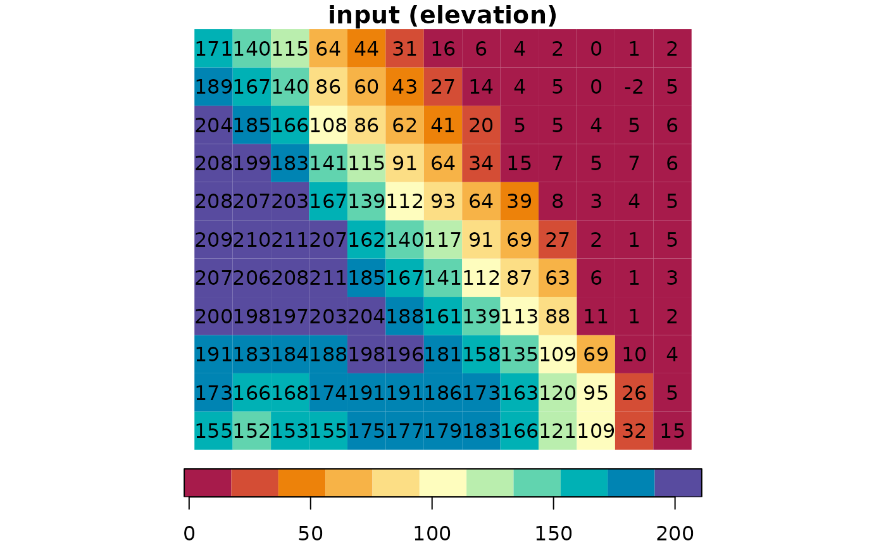
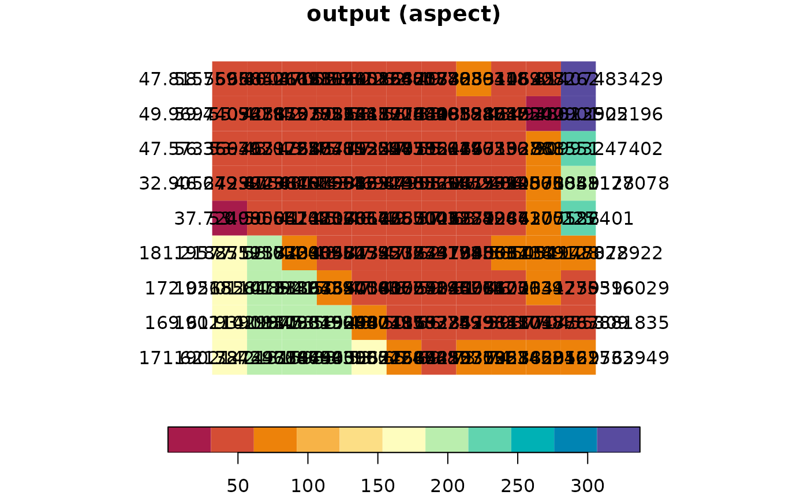

Calculates topographic aspect given a Digital Elevation Model (DEM) raster. Input and output are rasters of class stars, single-band (i.e., only `"x"` and `"y"` dimensions), with one attribute.
aspect(x, na_flag = -9999)
| x | A raster (class |
|---|---|
| na_flag | Value used to mark |
A stars raster with topographic slope, i.e., the azimuth where the terrain is tilted towards, in decimal degrees (0-360) clockwise from north. Aspect of flat terrain, i.e., where all values in the neighborhood are equal, is set to -1. Returned raster values are of class units (decimal degrees).
Aspect calculation results in NA when at least one of the cell neighbors is NA, including the outermost rows and columns. Given that the focal window size in aspect calculation is 3*3, this means that the outermost one row and one column are given an aspect value of NA.
The topographic aspect algorithm is based on the How aspect works article in the ArcGIS documentation:
https://desktop.arcgis.com/en/arcmap/10.3/tools/spatial-analyst-toolbox/how-aspect-works.htm
# Small example data(dem) aspect = aspect(dem) r = c(dem, round(aspect, 1), along = 3) r = st_set_dimensions(r, 3, values = c("input", "aspect")) plot(r, text_values = TRUE, breaks = "equal", col = hcl.colors(11, "Spectral"))#> Error in if (useRaster) { if (check_irregular(x, y)) stop(gettextf("%s can only be used with a regular grid", sQuote("useRaster = TRUE")), domain = NA) if (!is.character(col)) { col <- as.integer(col) if (any(!is.na(col) & col < 0L)) stop("integer colors must be non-negative") col[col < 1L] <- NA_integer_ p <- palette() col <- p[((col - 1L)%%length(p)) + 1L] } zc <- col[zi + 1L] dim(zc) <- dim(z) zc <- t(zc)[ncol(zc):1L, , drop = FALSE] rasterImage(as.raster(zc), min(x), min(y), max(x), max(y), interpolate = FALSE)} else .External.graphics(C_image, x, y, zi, col): missing value where TRUE/FALSE needed# \donttest{ # Larger example data(carmel) carmel_aspect = aspect(carmel) r = c(carmel, round(carmel_aspect, 1), along = 3) r = st_set_dimensions(r, 3, values = c("input", "aspect")) plot(r, breaks = "equal", col = hcl.colors(11, "Spectral"))#> Error in if (useRaster) { if (check_irregular(x, y)) stop(gettextf("%s can only be used with a regular grid", sQuote("useRaster = TRUE")), domain = NA) if (!is.character(col)) { col <- as.integer(col) if (any(!is.na(col) & col < 0L)) stop("integer colors must be non-negative") col[col < 1L] <- NA_integer_ p <- palette() col <- p[((col - 1L)%%length(p)) + 1L] } zc <- col[zi + 1L] dim(zc) <- dim(z) zc <- t(zc)[ncol(zc):1L, , drop = FALSE] rasterImage(as.raster(zc), min(x), min(y), max(x), max(y), interpolate = FALSE)} else .External.graphics(C_image, x, y, zi, col): missing value where TRUE/FALSE needed# }